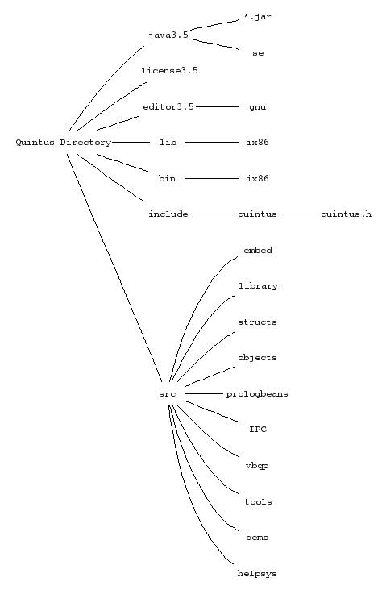

bin
ix86.
When the manual refers to runtime-directory, it is
that subdirectory that is referred to. It is also the value of the
runtime_directory Prolog flag.
lib
ix86, which contains
import libraries and other files required for building Prolog executables.
include
<quintus/quintus.h>.
src
demo
helpsys
embed
tools
vbqp
editor3.5
gnu,
which contains sq'.el' and .elc files for the GNU Emacs interface.
See ema-ove.
dbi, flex, etc.
license3.5
java3.5